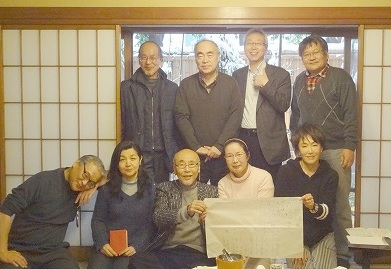

平成26年2月8日（土）
於 永田町・黒澤
平成26年3月15日（土）
於 ホテルニューオータニ・トレーダーヴィックス

永田町・黒澤
| （初折の表） | 発句 | 雪を解く風待ちかねて初音かな | 壊 殻 |
| 脇句 | 巨匠ゆかりの黒塀に春 | らいむ | |
| 第三 | 五月祭いざ高らかに声上げて | 欣 女 | |
| 四句 | 古びし寮にフルート流る | 光 義 | |
| 五句 | 舞姫もながめをるらむソチの月 | 榮々峰 | |
| 六句 | すすきの原を磯吉走りて | 洋 々 | |
| （初折の裏） | 初句 | 酔ひどれて新酒楽しや北の街 | 六 条 |
| 二句 | ハネて狂ふは男と女 | 峻 坊 | |
| 三句 | 雲の峰とびこえ君に逢ひにゆく | 芝 女 | |
| 四句 | あかつきやみに帯ほどきけり | 壊 殻 | |
| 五句 | 秘めごとは終わるべきもの寒椿 | らいむ | |
| 六句 | パスワード換え旅立つあした | 欣 女 | |
| 七句 | 月に行く三回転で着地して | 光 義 | |
| 八句 | 運動会は父のおにぎり | 榮々峰 | |
| 九句 | 赤とんぼ南高梅の里に飛ぶ | 洋 々 | |
| 十句 | 水面にふわりもやの漂ひ | 芝 女 | |
| 十一句 | 桜花千鳥ヶ淵に咲き誇り | 峻 坊 | |
| 十二句 | もののふ集ふはるの燈 | 壊 殻 | |
| （名残の表） | 初句 | 拝謁の栄に浴して柳の芽 | らいむ |
| 二句 | 白雲分くるヘリコプター見ゆ | 欣 女 | |
| 三句 | 一湾に海の道生る夏夕べ | 光 義 | |
| 四句 | 乱れ箱には浴衣ならびて | 洋 々 | |
| 五句 | ぬれ髪やお酒の力もかりてみる | 芝 女 | |
| 六句 | 恋の言の葉撫子の聞く | 峻 坊 | |
| 七句 | 後朝の白露ふみし君が沓 | 壊 殻 | |
| 八句 | 秋の螢よな見捨てたまひそ | らいむ | |
| 九句 | 夜汽車にてひとり来たれり恐山 | 欣 女 | |
| 十句 | 神の旅とて厩に宿り | 光 義 | |
| 十一句 | 包(パオ)の火のつぎつぎ消えて冬の月 | 洋 々 | |
| 十二句 | 王昭君の顔偲ぶ | 芝 女 | （名残の裏） | 初句 | 名人も筆のあやまり羽抜鳥 | 峻 坊 |
| 二句 | 妻にメールで大ジョッキなう | 壊 殻 | |
| 三句 | ぱみゅぱみゅとマチュピチュ高所恐怖症 | らいむ | |
| 四句 | 落ちくる水に谺も流れ | 欣 女 | |
| 五句 | 真青なる瀬戸にひろがる花筏 | 光 義 | |
| 挙句 | 夢の中なる讃岐の春は | 洋 々 | |